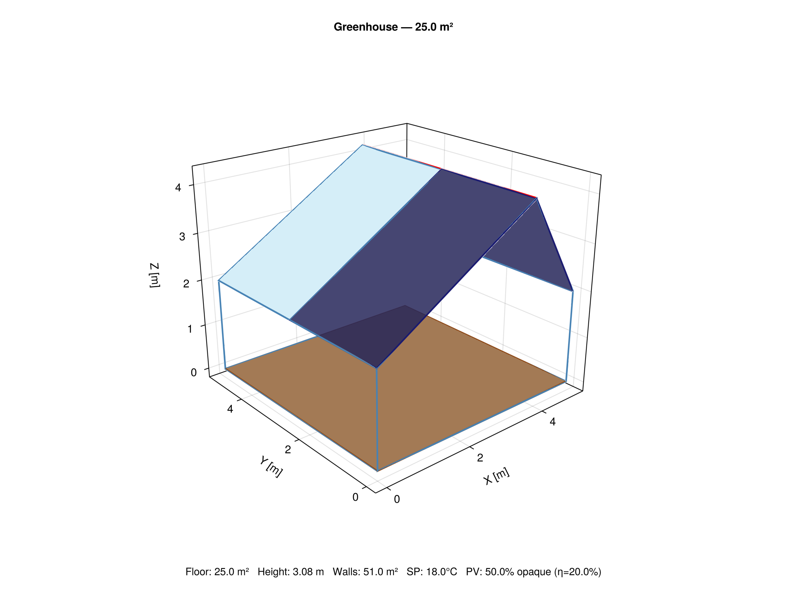
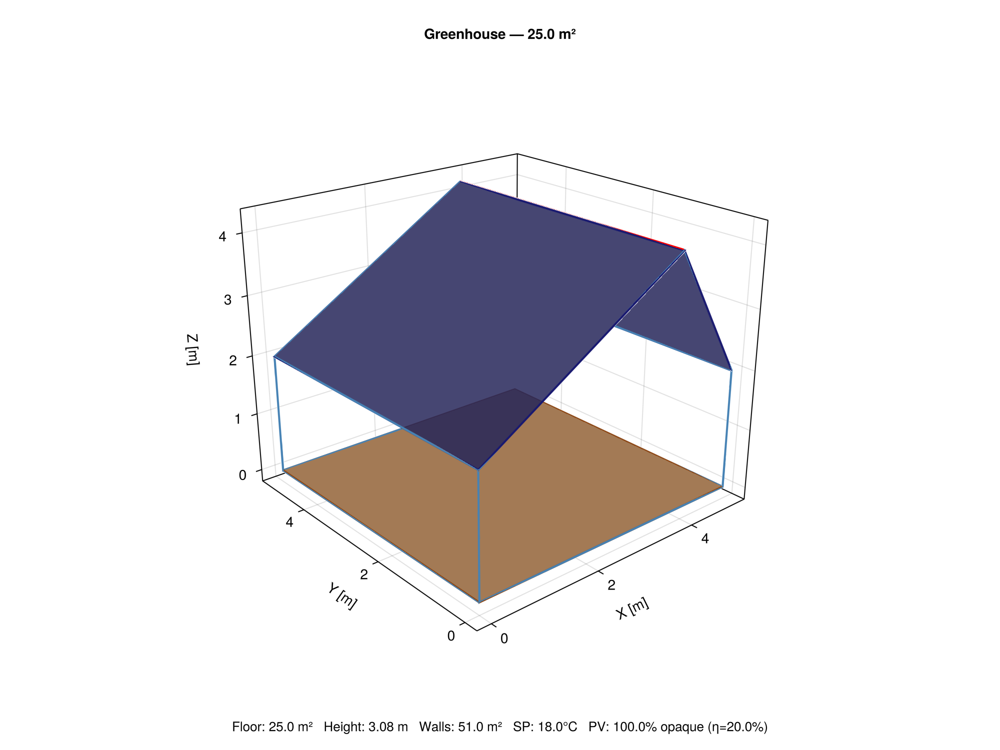
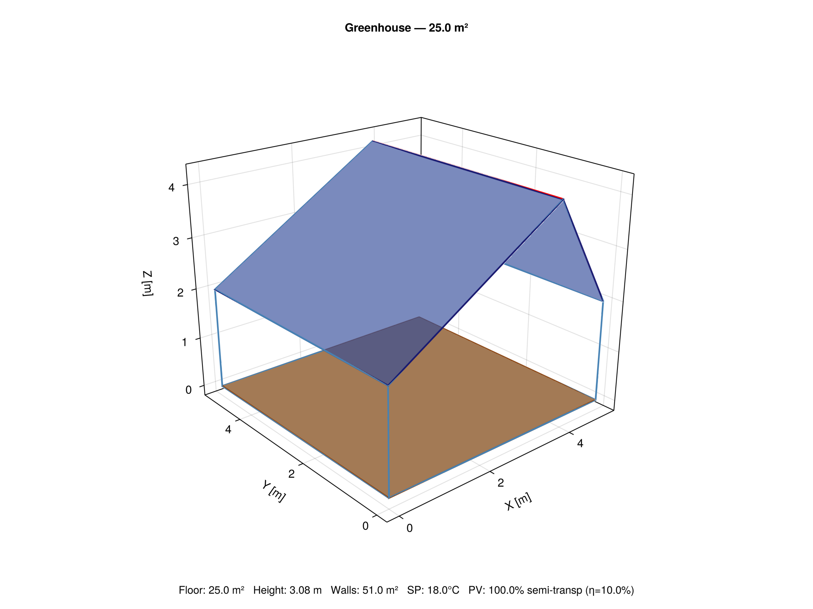
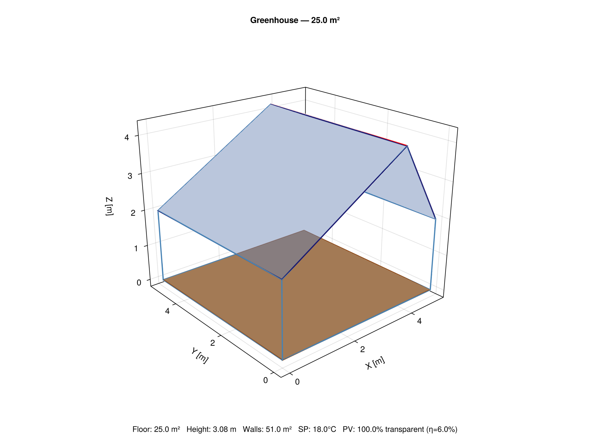
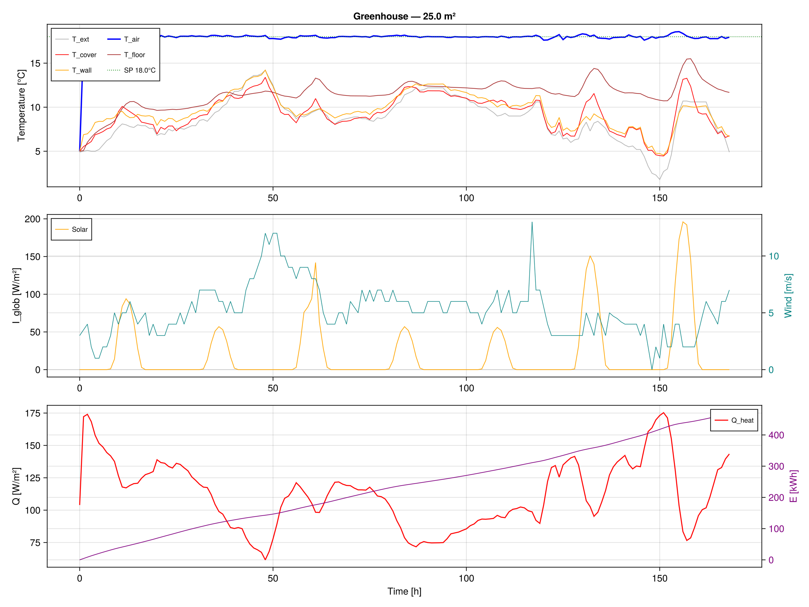
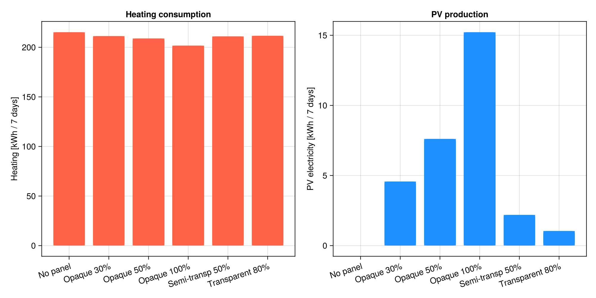

Tutorial: Solar Panels on Greenhouses
GreenhousesJL lets you add photovoltaic panels to the greenhouse roof with a single keyword. The panels reduce the light entering the greenhouse, generate electricity, and add waste heat to the cover. Panel efficiency varies with cell temperature and wind speed.
Two independent parameters
A PV panel is defined by two separate concepts:
| Parameter | Meaning | Example |
|---|---|---|
τ (transmittance) | Optical property of the panel material — how much light passes through each panel | τ=0 (opaque Si), τ=0.4 (thin-film), τ=0.65 (BIPV glass) |
coverage | Fraction of the roof surface covered by panels | 0.3 (30%), 0.5 (50%), 1.0 (100%) |
These are independent: you can cover 100% of the roof with semi-transparent panels, or 30% with opaque ones.
The effective irradiance reaching the greenhouse interior is:
\[I_{eff} = \underbrace{(1 - c)}_{\text{bare glass}} \times I_{glob} + \underbrace{c \times \tau_{PV}}_{\text{through panels}} \times I_{glob}\]
Panel presets
Three ready-to-use constructors cover the main PV technologies:
# Standard crystalline silicon, blocks all light
OpaquePanel(coverage=0.5, η=0.20)
# Thin-film / organic PV, lets 40% of light through
SemiTransparentPanel(coverage=1.0, τ=0.40, η=0.10)
# BIPV transparent glass, high light, low efficiency
TransparentPanel(coverage=1.0, τ=0.65, η=0.06)
# Fully custom
PVPanel(τ=0.30, α=0.60, η=0.12, coverage=0.7, facade=:roof)All parameters can be combined freely:
# 30% of roof covered with opaque panels
OpaquePanel(coverage=0.3)
# Entire roof covered with semi-transparent panels letting 50% light through
SemiTransparentPanel(τ=0.50, coverage=1.0)3D visualization of panel coverage
The view_greenhouse_3d function renders panels with distinct colors:
| No panel | Opaque 50% | Opaque 100% | |
|---|---|---|---|
 |  |
| Semi-transparent 100% | Semi-transparent 50% | Transparent 100% |
|---|---|---|
 |  |
- Dark blue-black: opaque panels (Si crystalline)
- Medium blue: semi-transparent (thin-film)
- Light blue tint: transparent BIPV
- Clear light blue: bare glass (no panel)
Light reduction inside the greenhouse
At 500 W/m² incident solar radiation:
| Panel type | τ | Coverage | Light at floor | Reduction | Electricity |
|---|---|---|---|---|---|
| No panel | 100% | 0% | 313 W/m² | 0% | 0 W/m² |
| Opaque | 0% | 50% | 156 W/m² | −50% | 43 W/m² |
| Opaque | 0% | 100% | 0 W/m² | −100% | 86 W/m² |
| Semi-transparent | 40% | 100% | 125 W/m² | −60% | 25 W/m² |
| Semi-transparent | 40% | 50% | 219 W/m² | −30% | 13 W/m² |
| Transparent | 65% | 100% | 203 W/m² | −35% | 8 W/m² |
Temperature-dependent efficiency
Panel efficiency is not constant, it drops when the cell gets hot. GreenhousesJL uses the Faiman (2008) model for cell temperature and a linear temperature coefficient:
\[T_{cell} = T_{out} + \frac{I_{glob}}{U_0 + U_1 \times u_{wind}}\]
\[\eta(T) = \eta_{STC} \times [1 + \beta \times (T_{cell} - 25°C)]\]
| Condition | T_out | I_glob | Wind | T_cell | η (Si, STC=20%) |
|---|---|---|---|---|---|
| Winter sunny | 5°C | 400 W/m² | 3 m/s | 14°C | 20.9% (+4%) |
| Spring sunny | 15°C | 600 W/m² | 2 m/s | 31°C | 19.6% (−2%) |
| Summer peak | 35°C | 1000 W/m² | 1 m/s | 66°C | 16.7% (−17%) |
| Summer + wind | 35°C | 1000 W/m² | 5 m/s | 52°C | 17.8% (−11%) |
In winter, cold cells perform above their rated efficiency. In summer, hot cells lose up to 17% of their rated power. Wind cooling helps (+1.1% efficiency per additional m/s of wind).
Full simulation example
using GLMakie
using GreenhousesJL
tmy = load_tmy("path/to/10Dec-22Nov.txt")
# Savona greenhouse with 50% opaque panels on roof
p = SavonaParams(tmy;
with_walls = true,
panel = OpaquePanel(coverage=0.5, η=0.20))
u0 = initial_state(p; T0=278.15, T_soil0=276.15)
sol = solve(ODEProblem(greenhouse_rhs!, u0, (0.0, 604800.0), p),
Tsit5(); reltol=1e-6, saveat=3600.0)
# Cumulative electricity produced (last state variable)
E_elec = sol[state_size(p), end] # kWh
println("Electricity produced: \$(round(E_elec, digits=1)) kWh")
# Visualize
plot_results(sol, p; save_path="pv_results.png")
view_greenhouse_3d(p; save_path="pv_3d.png")
export_csv("pv_data.csv", sol, p)Simulation results: effect of PV panels


All configurations maintain the 18°C setpoint. The PI controller compensates for reduced solar gain.
Heating vs PV production (separate scales)

Left: heating consumption is nearly constant (~220 kWh) because the PI controller compensates for reduced solar gain. Right: PV production ranges from 0 (no panel) to 15 kWh (opaque 100%), note the different y-axis scales.
Net energy balance

PV production (blue, negative) offsets a small fraction of heating demand (red) in winter. The opaque 100% configuration produces ~15 kWh while consuming ~220 kWh of heating, a 7% offset. In summer, with 5× more solar radiation, this ratio would improve significantly.
Temperature tracking
All configurations maintain 18°C regardless of panel type, the PI controller adjusts heating power automatically.
Parametric study
Since each simulation runs in 3–5 ms, you can sweep coverage and transmittance in seconds:
for τ in [0.0, 0.2, 0.4, 0.6, 0.8]
for coverage in [0.2, 0.5, 0.8, 1.0]
panel = PVPanel(τ, max(0, 1-τ-0.1), 0.12, coverage, :roof)
p = SavonaParams(tmy; panel=panel)
sol = solve(ODEProblem(greenhouse_rhs!, initial_state(p), (0.0, 604800.0), p),
Tsit5(); reltol=1e-6)
# ... extract E_elec, Q_heat, PAR_floor ...
end
end
# 20 combinations × 4 ms = 80 ms total